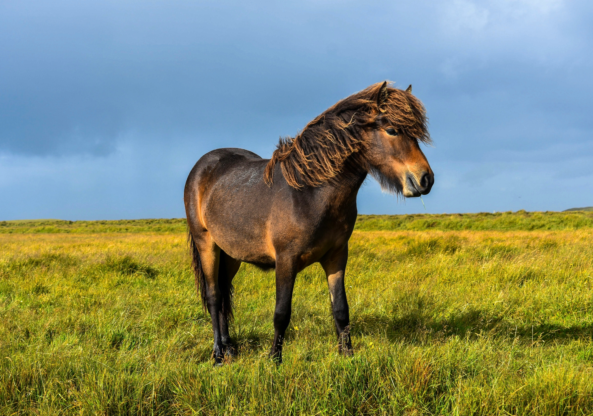

Tämä on jekkusivu nro 2!
Tänne tulee loput Sepon jekut.
Jekkuja jekkuja jekkuja, kunnes ei ole enää jekkuja.
Runo Seppo-ponista
Seppo-poni porkkanaa haukkaa
ja rieumuiten pois laukkaa.
Laitumen nurkkaan kakkaa
samalla kun ihminen varusteita puhtaaksi hakkaa.
